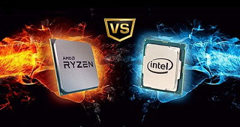

Intel vs AMD quais as diferenças?

Como se sabe, a intel é a corrente direta da AMD, ambas têm os seus prós e contras e para que se possam familiarizar um pouco mais com a situação deixo-vos aqui em baixo uma pequena comparação entre as principais franquias das marcas.